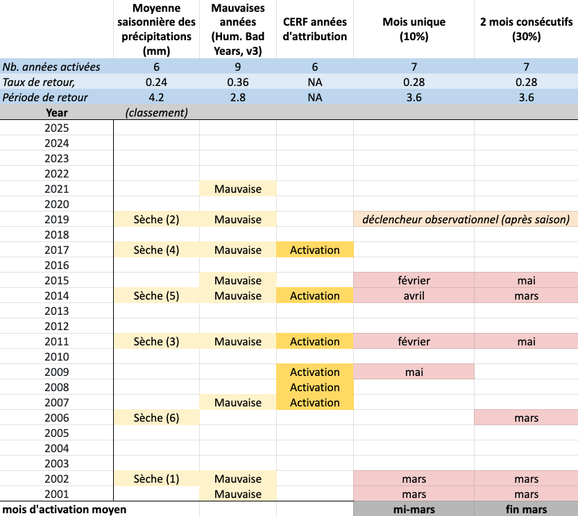

Choisir les Protocoles Finaux
Les options sont présentées ci‑dessous
NOUS METTONS À JOUR LES OPTIONS SUR LA BASE DE LA DISCUSSION DE LA DERNIÈRE RÉUNION

Le tableau présente les options sous forme de colonnes, comparées aux crises humanitaires et aux années de plus faible pluviométrie.
Deux approches sont présentées :
- Une approche consiste à permettre à n’importe quel mois de déclencher, puis à réduire la fréquence pour tous les mois jusqu’à atteindre environ 30 % par an.
- L’autre approche consiste à exiger qu’au moins trois mois déclenchent parmi les cinq mois de prévisions.
Points à garder en tête :
- Chaque protocole combiné est réglé à environ 30 % par an.
- Les différents protocoles peuvent déclencher dans des années différentes, ce qui entraîne des niveaux de précision différents.
- Les différents protocoles peuvent déclencher plus tôt ou plus tard dans l’année, donnant des délais de préparation différents.
Veuillez examiner attentivement le tableau, en discuter, puis partager vos réflexions dans le formulaire ci‑dessous.